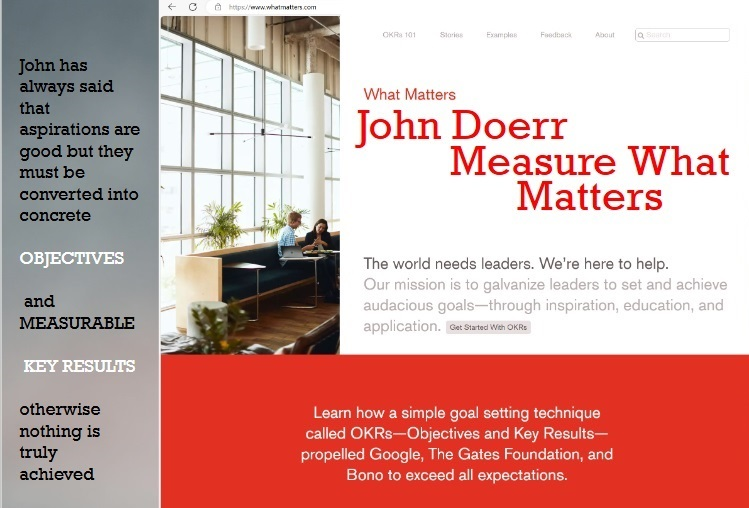
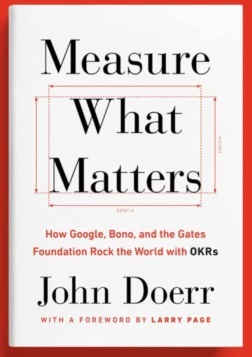
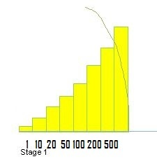

John Doerr — Measure What Matters
John Doerr’s philosophy is simple yet transformative: aspirations are good, but they must become measurable. Without concrete Objectives and Key Results, nothing is truly achieved.

Why OKRs Matter to Community Savings Solution
The OKR framework — Objectives and Key Results — provides the discipline that turns vision into execution. It has propelled Google, The Gates Foundation, and countless enterprises to clarity and scale.
In our context, OKRs underpin the 7 Milestones of Community One. Each milestone represents a measurable key result on the journey from one saver to five hundred.

“Ideas are easy. Execution is everything.”
The call for the Chairperson of Heart is, in essence, an OKR in motion. The Objective: light the first saver. The Key Results: build the milestones, prove the model, empower the community.
← Back to the Milestones